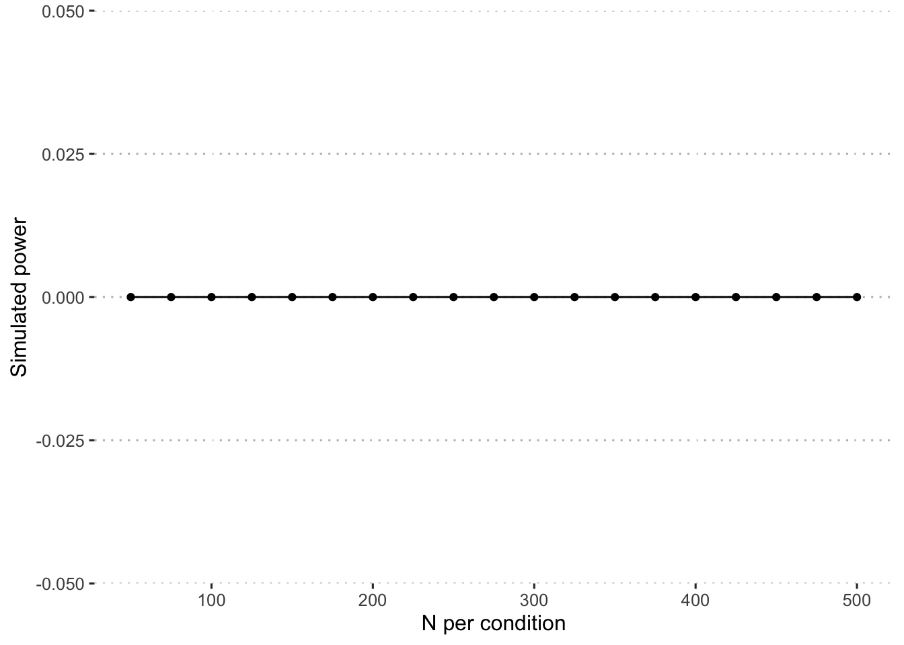

Power analysis
Last updated 2021-07-30
We conduct power analyses for the main research question – does formatting affect response to personality items – using a simulation method. That is, we generate datasets of varying sample sizes (from as few as 50 participants per condition to as many as 100), then simulate responses based on the models fit to the pilot data.
Model 1
To simplify our code, we write a function that simulates responses to model 1 based on a given sample size, N, and number of repititions.
# function to simulate mod.format_b1
sim_format_b1 = function(n, sims){
p_vals = numeric(length = sims)
sim_a = expand_grid(
proid = as.character(1:n),
item = c(1:33),
format = "Adjective\nOnly"
)
sim_b = expand_grid(
proid = as.character((n+1):(2*n)),
item = c(1:33),
format = "Am\nAdjective"
)
sim_c = expand_grid(
proid = as.character(((2*n)+1):(3*n)),
item = c(1:33),
format = "Tend to be\nAdjective"
)
sim_d = expand_grid(
proid = as.character(((3*n)+1):(4*n)),
item = c(1:33),
format = "I am someone\nwho tends to be\nAdjective"
)
sim_data = rbind(sim_a, sim_b) %>% rbind(sim_c) %>% rbind(sim_d)
for (i in 1:sims){
sim_data$response = simulate(mod.format_b1, newdata = sim_data, allow.new.levels = T)[,1]
sim_mod = lmer(response~format + (1|proid), data = sim_data)
p_vals[i] = anova(sim_mod)["format", 6]}
return(p_vals)
}Next we identify the sample sizes for simulation (from 50 to 500 by 25) and create a data frame to hold the results. Power represents the proportion of simulations for which p is less than .05.
# simulate at various sample sizes
# n = number per condition
sample_sizes = seq(50, 500, 25)
n_sims = 1000
power_df = data.frame(
N = sample_sizes,
power = 0
)Here we (inefficiently) loop through all sample sizes and calculate power.
set.seed(20210729)
for(i in sample_sizes){
pvalues = sim_format_b1(i, n_sims)
sig = ifelse(pvalues < .05, 1, 0)
power_df$power[power_df$N == i] <- sum(sig)/n_sims
}Finally, we plot these effects to determine needed sample size.
power_df %>%
ggplot(aes(x = N, y = power)) +
geom_line() +
geom_point() +
labs(
x = "N per condition",
y = "Simulated power"
) +
theme_pubclean()
#identify minimum sample size
power_df_min = power_df %>%
filter(power > .95)
N_min = min(power_df_min$N)The simulation suggests that power would be over the threshold of .95 with a sample size of 125 participants per condition.
Model 2
Here we repeat the process for our second model, which uses both blocks of data.
# function to simulate mod.format_b2
sim_format_b2 = function(n, sims){
p_vals = numeric(length = sims)
sim_a_b2 = expand_grid(
proid = as.character(1:n),
item = c(1:33),
format = "Adjective\nOnly",
block = "1"
)
sim_b_b2 = expand_grid(
proid = as.character((n+1):(2*n)),
item = c(1:33),
format = "Am\nAdjective",
block = "1"
)
sim_c_b2 = expand_grid(
proid = as.character(((2*n)+1):(3*n)),
item = c(1:33),
format = "Tend to be\nAdjective",
block = "1"
)
sim_d_b2 = expand_grid(
proid = as.character(((3*n)+1):(4*n)),
item = c(1:33),
format = "I am someone\nwho tends to be\nAdjective",
block = "1"
)
sim_b2 = expand_grid(
proid = as.character(1:(4*n)),
item = c(1:33),
block = "2"
)
sim_b2$format = sample(
x = c("Adjective\nOnly",
"Am\nAdjective",
"Tend to be\nAdjective",
"I am someone\nwho tends to be\nAdjective"),
size = 33*n*4,
replace = TRUE
)
sim_data = full_join(sim_a_b2, sim_b_b2) %>%
full_join(sim_c_b2) %>%
full_join(sim_d_b2) %>%
full_join(sim_b2)
for (i in 1:sims){
sim_data$response = simulate(mod.format_b2,
newdata = sim_data,
allow.new.levels = T)[,1]
sim_mod = lmer(response~format + (1|proid),
data = sim_data)
p_vals[i] = anova(sim_mod)["format", 6]}
return(p_vals)
}We use the same sample sizes and simulation length for these analyses, so we start by creating a new data frame.
power_df_2 = data.frame(
N = sample_sizes,
power = 0
)Here we (inefficiently) loop through all sample sizes and calculate power.
set.seed(20210729)
for(i in sample_sizes){
pvalues = sim_format_b2(i, n_sims)
sig = ifelse(pvalues < .05, 1, 0)
power_df_2$power[power_df_2$N == i] <- sum(sig)/n_sims
}Finally, we plot these effects to determine needed sample size.
power_df_2 %>%
ggplot(aes(x = N, y = power)) +
geom_line() +
geom_point() +
labs(
x = "N per condition",
y = "Simulated power"
) +
theme_pubclean()
#identify minimum sample size
power_df2_min = power_df_2 %>%
filter(power > .95)
N_min2 = min(power_df2_min$N)## Warning in min(power_df2_min$N): no non-missing arguments to min; returning InfThe simulation suggests that power would be over the threshold of .95 with a sample size of participants per condition.